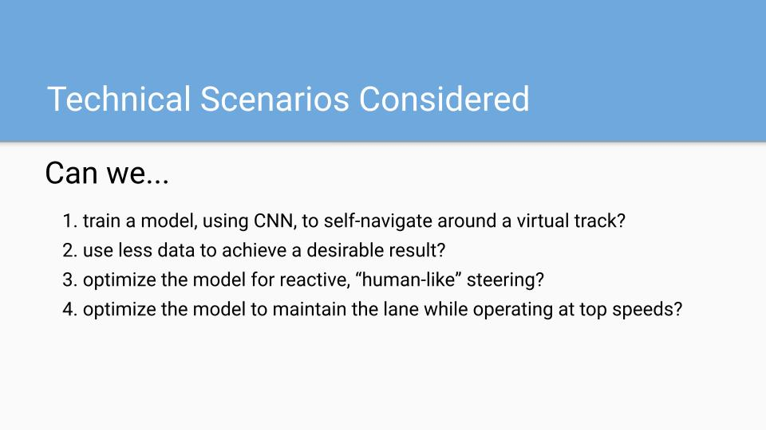
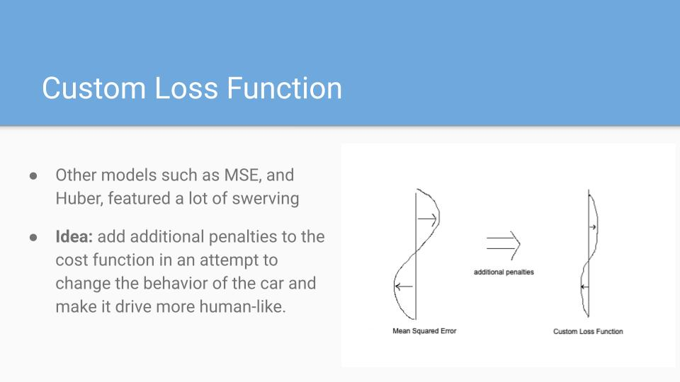
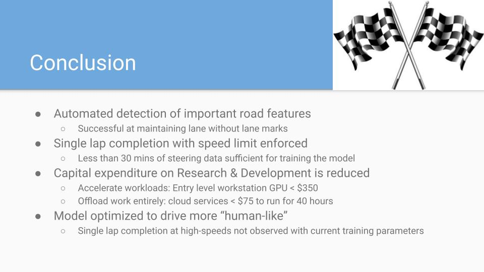
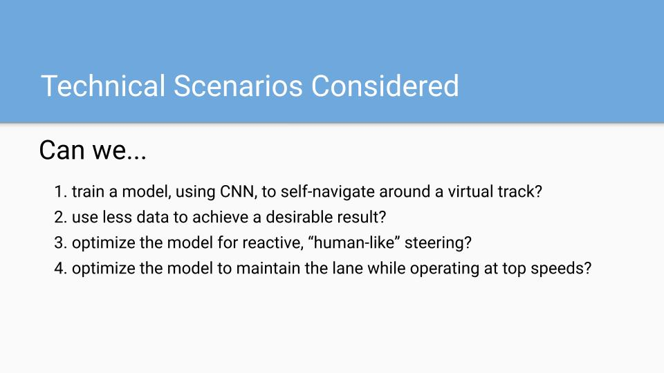
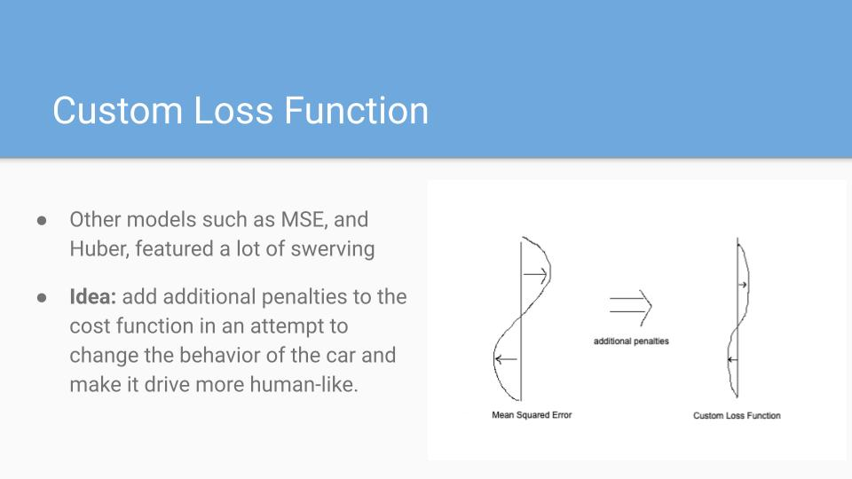
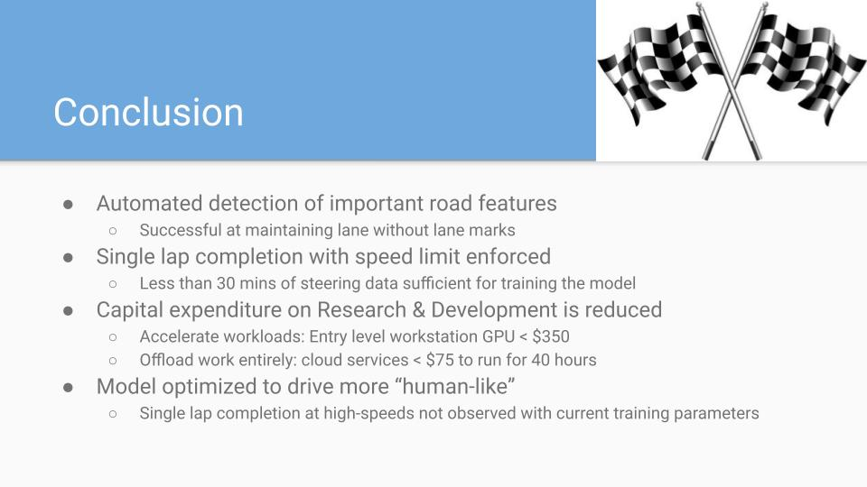
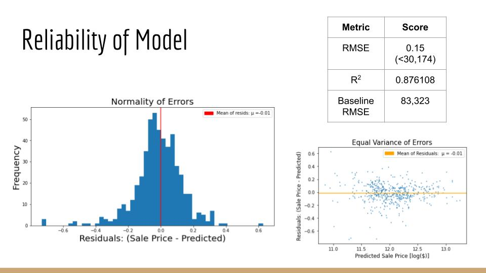
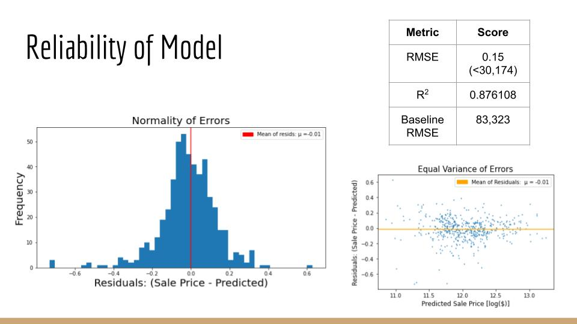

Designing Data Visualizations
In this post I talk about how I built an analytics dashboard for a research group at Berkeley Lab, using only Python.
Get to know me
Happily transplanted to the SF Bay Area as a STEM researcher, I have been visualizing and extracting key insights from complex data sets for over 5 years. I help convert concepts and expertise into well-functioning products. My preference for data-driven solutions originated at a young age, when a report from a DNA test explained exactly where the color of my skin and eyes came from. Never once were my speculations correct, instilling a long-lasting respect for unbiased data.
Whether in the office or on the road, I enjoy working with others. I have performed data analysis in research facilities across the world, co-authoring several peer-reviewed journal publications as a direct result, while concurrently raising over $120,000 for local charities through participation in amateur team cycling events. As a dedicated road cyclist, my intrigue for challenge shines through in my pursuit of steep elevation. I'm not afraid of a little sweat and have confidence that the view from the top is worth the struggle.
Brandon Griffin
34
Reno, Nevada
Services i offer to my clients
Experience working with Plotly-Dash, Tableau, Heroku, and Streamlit.
Linear and non-linear distribution analysis and modeling. Favorite Technologies: Python, Excel, & Google Sheets.
Experience extracting insights with multiple regression and classification algorithms.
Python proficiency applied to reduce workload by automating repetitive tasks.
Certified completion of LinkedIn's Advanced SQL for Data Scientists training, as well as gold badge status on HackerRank.com for SQL challenges.
Completion of graduate-level math courses in calculus, partial differential equations, linear algebra, statistical mechanics & probability theory.
I am available for freelance projects. Let's work together and get your project done.
Showcasing my favorite projects

Researchers in the Atomic-Molecular-&-Optical-Sciences Group, within the Chemical Sciences Division at Berkeley Lab (LBNL), have developed a novel technique for the investigation of nonlinear physical processes with time-resolved measurements scaled at the molecular level.
In this project I built open-source visualization tools supporting research analytics both in and out of the lab. A bottleneck identified in group workflow was related to a reliance on proprietary software to visualize and analyze their data. To solve the problem I developed a web app written entirely in Python. Now everyone can analyze the data on their individual workstations, at the same time, as well as customize any component should a need for change arise. This dashboard is used to track key objectives, validate data quality, drive research decisions, and accelerate impact.
AMO Sciences at Berkeley Lab
01 June, 2021
PYTHON, PLOTLY-DASH
 

An open-source driving simulator was used to build a self-driving car model, while a few select technical scenarios were analyzed in detail. For example, the use of an artificial neural network to train a deep learning model to steer a car around a virtual track was explored through variations in convolution architecture.
The collaboration's mission was to incentivize stakeholders in the auto-industry to invest in the self-driving R&D efforts of smaller, mid-sized companies. In the end, it was found that less than 30 minutes of training data was sufficient for the model to navigate around a virtual track, so long as image augmentation was conducted on ~60% of data during pre-processing, and vehicle speed was reduced to half the maximum. Additionally, GPU accelerated processing of image data was at least six times faster than by CPU processing alone. It was demonstrated that cloud services are an affordable option for collaborative training environments and that the technicality of cloud computing is not a major roadblock for even the smallest data teams.
General Assembly
11 November, 2020
PYTHON, KERAS-TENSORFLOW
 
When it comes to appraisal of individual real estate, the quality and quantity of many physical property-attributes must be taken into consideration. Examples of key characteristics include location, size, and the ratio of bedrooms-to-bathrooms. In this project, supervised machine learning is applied to a dataset consisting of over 800 properties sold in Ames, Iowa from 2006-2010. Correlation analysis, with feature engineering, and several algorithms, such as multiple regression, are applied to optimize a model in predicting the final sale price of homes.
It is demonstrated that the baseline null model can be improved upon by over 36% with the inclusion of carefully chosen explanatory features. Furthermore, these extracted insights are capable of informing decisions that optimize ROI as it relates to the sale of, or investment in, individual properties.
General Assembly
09 October, 2020
PYTHON, SKLEARN, KAGGLE
Competing in the 2021 Data Science competition Predicting Impact of News Sentiment on the Stock Market, hosted by the Global Association for Research Methods and Data Science (RMDS), was a super fun way to collaborate with former Bootcamp teammates while stepping outside my comfort zone.
It was a rare opportunity to do a time-series analysis and forecast with real-world financial data. An interactive overview of our analysis, as well as a summary of our team submission, can now be explored with a cute web app hosted with Streamlit.io!
RMDS & WorldData.AI
28 March, 2021
PYTHON, ARIMA, STREAMLIT
NOTE: This project section is currently under development, please check back for updates.
A county-level analysis of California’s Class of 2019 SAT/ACT performance, as it relates to a so-called education “equitability score”, with data visualizations in Matplotlib and Seaborn. The scoring methodology is explicitly defined and is dependent on only two metrics, average household income per county and countywide expenditure per pupil.
General Assembly
25 September, 2020
PYTHON, PANDAS, SEABORN
NOTE: This project section is currently under development, please check back for updates.
API calls were made in batches to gather over 200,000 submissions from two similarly themed subreddits, r/suicide_watch and r/depression. Machine learning algorithms such as Multinomial Naive Bayes were applied to predict the origin of each submission with greater than 70% accuracy. The baseline model was improved upon by at least 20% after an analysis revealed 80 words, 40 unique and topically related to each subreddit, were exploited in building the model.
General Assembly
23 October, 2020
PYTHON, PUSHSHIFT, PANDAS
What my clients think about me
Brandon’s work ethic is extremely note worthy. He manages his time efficiently and completes tasks with the utmost care and consideration to the overall goal. An asset to any team he is on for sure!
 Anusha Khan
Anusha Khan
Brandon Griffin has demonstrated a solid understanding of...experimental design, operation and analysis. He also exhibits impressive initiative in the form of working well either alone or as part of a small team. Brandon’s oral and written communication skills are excellent and he’s a thoughtful and considerate coworker who is well regarded by all other members in my group.
Daniel Slaughter, PhDCheck out my latest blog posts
In this post I talk about how I built an analytics dashboard for a research group at Berkeley Lab, using only Python.
General Assembly runs a tight ship. The program is rigorous, covering a diverse assortment of selected topics in the field of Data Science ranging from command line and shell scripting to web scraping and API request handling.
The Sunday before last was my fabulous final shift, as a food server, on the historic sidewalks of San Francisco’s Castro District.
Feel free to contact me anytime